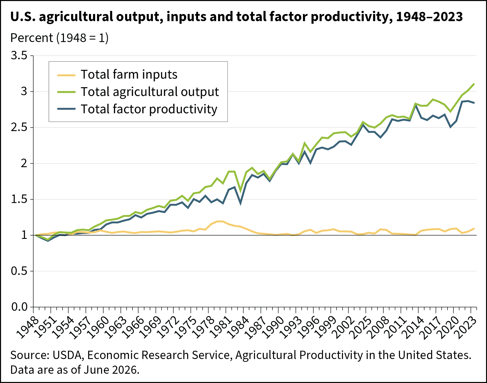
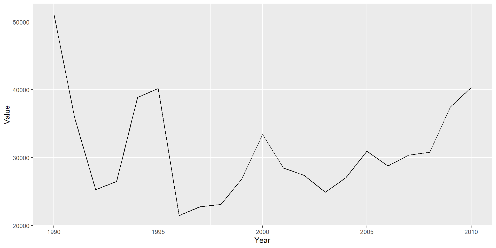
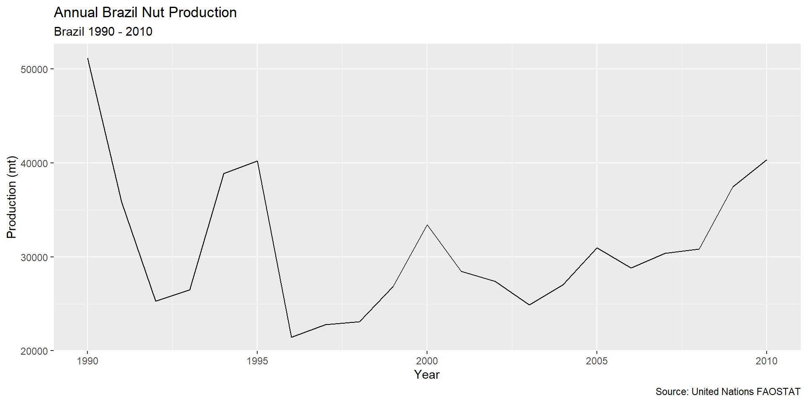
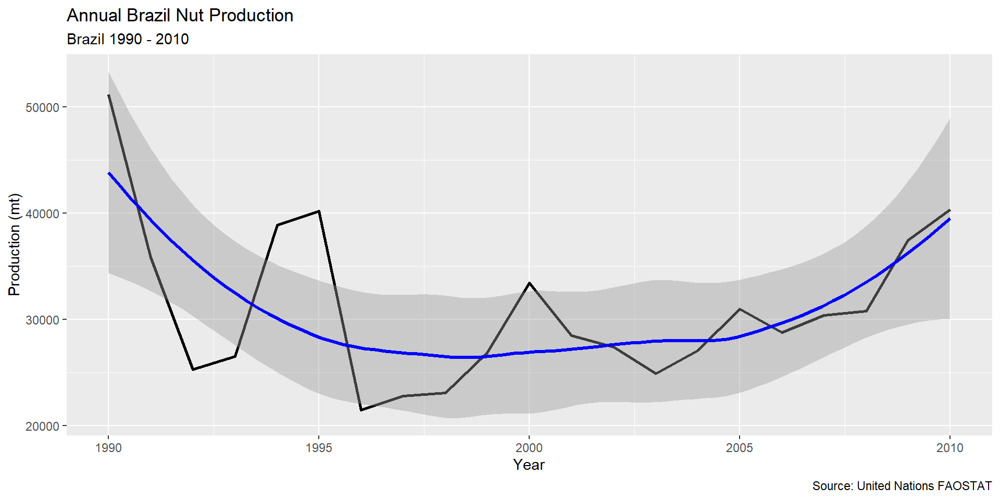

FAOSTAT Data and Visualization
AREC 280 - Harvesting Big Data
University of Maryland
Familiarize Ourselves with the FAO Crop & Livestock Data
Basic Data Visualization using ggplot()
ggplot()Look at the FAO data in
AGNR-AREC280_Fall2026/Data/FAO
Think about how you would load data in this folder into R
How should we measure agricultural productivity?
What are inputs to agriculture?
How do we measure agricultural productivity?
In practice we measure TFP as a function
What is the difficulty with this approach?
Estimating TFP is an empirical modeling problem

Some challenges measuring TFP using observational data
Consistency of data is important for measuring TFP across countries and over time
The UN collects and reports the FAOSTAT Data
Available at https://www.fao.org/faostat
On Google Drive in Data/FAO
Each observation is a combination of
FAOSTAT measures
Crops
Measurements for both primary crops (soybeans) and refined goods (soybean oil)
FAOSTAT Measures
Livestock
Load the FAOSTAT data into R
FAO_crop_livestock-subsample.csv) contains a limited set of observations
Rows: 8,036
Columns: 14
$ ISO3166_1 <chr> "076", "076", "076", "076", "076", "076", "076", "076",…
$ Area <chr> "Brazil", "Brazil", "Brazil", "Brazil", "Brazil", "Braz…
$ ItemCode <chr> "01341", "01341", "01341", "01341", "01341", "01341", "…
$ Item <chr> "Apples", "Apples", "Apples", "Apples", "Apples", "Appl…
$ `Area Code` <dbl> 21, 21, 21, 21, 21, 21, 21, 21, 21, 21, 21, 21, 21, 21,…
$ `Item Code` <dbl> 515, 515, 515, 515, 515, 515, 515, 515, 515, 515, 515, …
$ `Element Code` <dbl> 5312, 5312, 5312, 5312, 5312, 5312, 5312, 5312, 5312, 5…
$ Element <chr> "Area harvested", "Area harvested", "Area harvested", "…
$ `Year Code` <dbl> 1990, 1991, 1992, 1993, 1994, 1995, 1996, 1997, 1998, 1…
$ Year <dbl> 1990, 1991, 1992, 1993, 1994, 1995, 1996, 1997, 1998, 1…
$ Unit <chr> "ha", "ha", "ha", "ha", "ha", "ha", "ha", "ha", "ha", "…
$ Value <dbl> 22337.0, 25630.0, 24181.0, 25652.0, 27112.0, 26704.0, 2…
$ Flag <chr> "A", "A", "A", "A", "A", "A", "A", "A", "A", "A", "A", …
$ Note <chr> NA, NA, NA, NA, NA, NA, NA, NA, NA, NA, NA, NA, NA, NA,…What agricultural products are in this data set?
There are many products
# A tibble: 21 × 14
ISO3166_1 Area ItemCode Item `Area Code` `Item Code` `Element Code` Element
<chr> <chr> <chr> <chr> <dbl> <dbl> <dbl> <chr>
1 076 Braz… 01377 Braz… 21 216 5510 Produc…
2 076 Braz… 01377 Braz… 21 216 5510 Produc…
3 076 Braz… 01377 Braz… 21 216 5510 Produc…
4 076 Braz… 01377 Braz… 21 216 5510 Produc…
5 076 Braz… 01377 Braz… 21 216 5510 Produc…
6 076 Braz… 01377 Braz… 21 216 5510 Produc…
7 076 Braz… 01377 Braz… 21 216 5510 Produc…
8 076 Braz… 01377 Braz… 21 216 5510 Produc…
9 076 Braz… 01377 Braz… 21 216 5510 Produc…
10 076 Braz… 01377 Braz… 21 216 5510 Produc…
# ℹ 11 more rows
# ℹ 6 more variables: `Year Code` <dbl>, Year <dbl>, Unit <chr>, Value <dbl>,
# Flag <chr>, Note <chr>What are the possible values of Element?
Create a plot of your selected crop/measurement
Year on the horizontal axisValue) on the verticalHow do you do this with ggplot?
ggplot() function
+ operatorLayers add visual elements to your visualization
geom_point()geom_line()geom_smooth()Year on the horizontal axis (x aesthetic)Value) on the vertical (y aesthetic)Provide data and aesthetics to ggplot()
Year on the horizontal axis (x aesthetic)Value) on the vertical (y aesthetic)Provide data and aesthetics to layers
Both versions will produce the same visualization

Good visualizations are clear and self-contained

Adding Layers
+ operatorModifying Layers

AREC 280 - Fall 2026